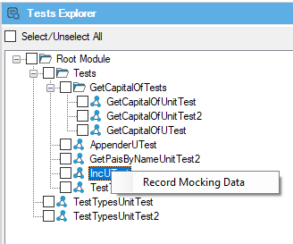

To have proper data in place can be very hard when testing applications. Not only you need different data sets to test different scenarios and equivalent classes, but also providing combinations that can be fundamental to catch bugs before they going to the production environment.
Additionally, GeneXus applications are commonly data-intensive apps, which means that your tests will not only need a combination of data input but some data configured in your database to let tests run properly.
Database Mocking is a technique that allows you to set the desired database state (for different tables) in your tests to let specific data-sets ready for future test execution. Using this technique, you can focus on getting the test data-sets ready once (in a real database), and then use it on different test phases regarding the environments by using mocking. In other words, Database Mocking is a simulation of a database with few records.
Mocking works by recording data (SQLs / results) used for a test by listening for all queries and responses during the recording stage. That information is stored (as mocking data) and will be used in all future executions of the test in different environments. During the recording, the queries are stored in order (order is relevant) so it is expected that the test will run the queries in the same order that was recorded. Consequently, if over time the tests navigation changes or queries are different, mocking data will need to be recorded again.
In case that during test execution, the tests need some data that was not recorded during the recording stage, that query will use real database data sources to get the answer.
To start the recording stage click on the "Tests Explorer" panel located in the right-side menu and right-click over a Unit Test to select the option "Record Mocking Data".

Warning: This will run the test case you've selected using your current data-sources / databases. Finally, once the test ends, mocking data will be stored in a file associated with the test using the name of it. Thus, after having associated mocking data on a test, every time it runs it will use that previously recorded data without using the database.
This feature is available for .NET since GeneXus 16, for Java since GeneXus 16 upgrade 2 and for .NetCore since GeneXus 16 upgrade 8.